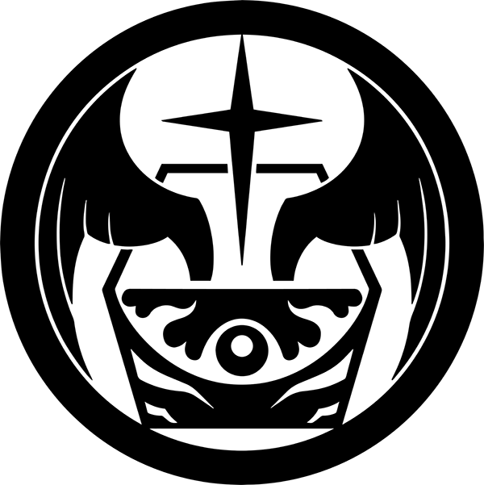

Пони-экспресс
МОГ Альфа-4
Миссия оперативной группы: Мобильная оперативная группа Альфа-4 состоит в основном из персонала, обученного для работы в качестве внедрённых сотрудников, и специализируется на отслеживании, перехвате и обезвреживании аномальных объектов, отправленных через почтовые службы или службы доставки по всему миру.
Дополнительно
Оказание содействия в содержании объектов: SCP-111 - Драко-Улитки SCP-130 - Почтовое отделение

Последняя надежда
МОГ Альфа-9
Миссия оперативной группы: Перерождение МОГ Омега-7. Целью МОГ Альфа-9 является подготовка и использование гуманоидных SCP-объектов в полевых условиях.
Дополнительно
Операции группы:Семя идеи Сделки с дьяволом Волки у двери На опасном пути Операция "Лагерь Гранада" Не шутка Набирая обороты

Багряная десница
МОГ Альфа-1
Миссия оперативной группы: Мобильная оперативная группа Альфа-1 подчиняется непосредственно Совету O5 и используется в ситуациях, которые требуют строжайшей оперативной секретности. Оперативная группа составлена из лучших и наиболее преданных оперативников Фонда. Доступ к любой дополнительной информации о МОГ Альфа-1 ограничен уровнем доступа 5..
Дополнительно
Оказание содействия в содержании объектов: SCP-2271 SCP-3434 - И мы предпочли бы остаться во тьме… SCP-3741 SCP-4470 SCP-5008 - ТИШИНА

Ложный след
МОГ Гамма-5
Миссия оперативной группы: Мобильная оперативная группа Гамма-5 специализируется на пресечении распространения сведений об аномальных событиях или явлений в тех случаях, когда первоначальные усилия по подавлению оказались неэффективными или недостаточными, или в случаях, когда такие знания уже достигли критического уровня распространения среди гражданских лиц. Это включает в себя разработку и внедрение экспериментальных амнезиаков, а также процедур внедрения ложных воспоминаний.
Дополнительно
Оказание содействия в содержании объектов: SCP-1086 - Синдром второго мозга SCP-1110 - Запись ограбления SCP-1460 - Коматозник SCP-1532 - Человеческая лавка Доктора Гэйла©
Кормящие рыб
МОГ Гамма-6
Миссия оперативной группы: Мобильная оперативная группа Гамма-6 специализируется на обнаружении и отслеживании глубоководных морских или океанических аномалий.
Дополнительно
Оказание содействия в содержании объектов: SCP-169 - Левиафан SCP-879 - Колониальное китообразное SCP-1264 - Воскресшие корабли SCP-1409 - Китовая песня-маяк SCP-2120 - Устранение последствий SCP-2770 - Приманка
Законники Азимова
МОГ Гамма-13
Миссия оперативной группы: Мобильная оперативная группа Гамма-13 специализируется на расследовании, отслеживании и задержании аномальных объектов, лиц и сущностей, имеющих отношение к СО-1115 ("Андерсон Роботикс"). Это включает в себя идентификацию клиентов, выявление продуктов и проведение рейдов на офисы "Андерсон Роботикс